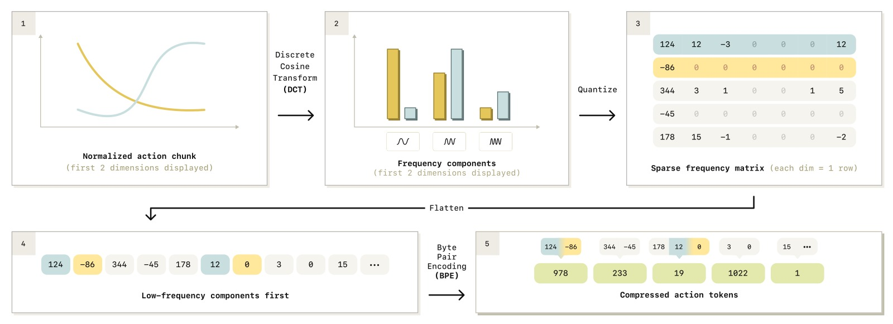
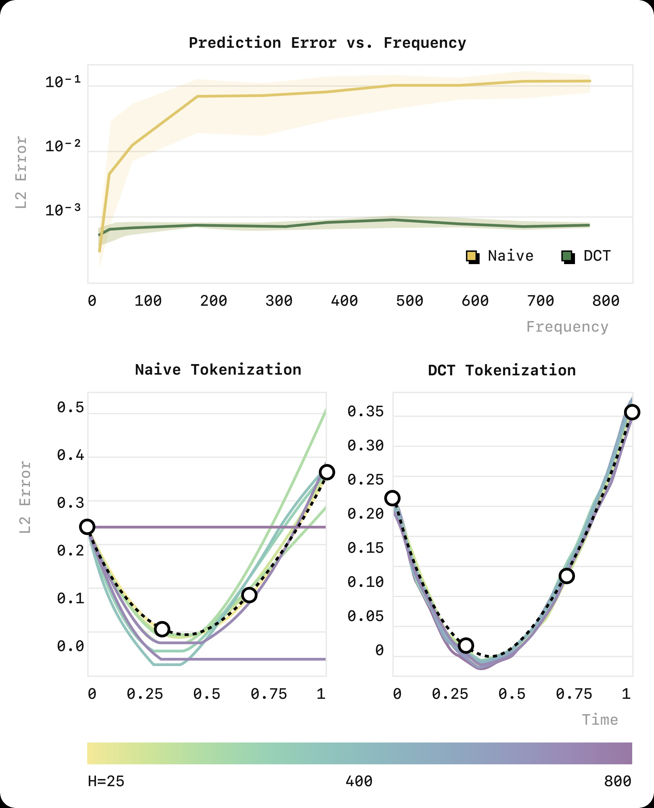
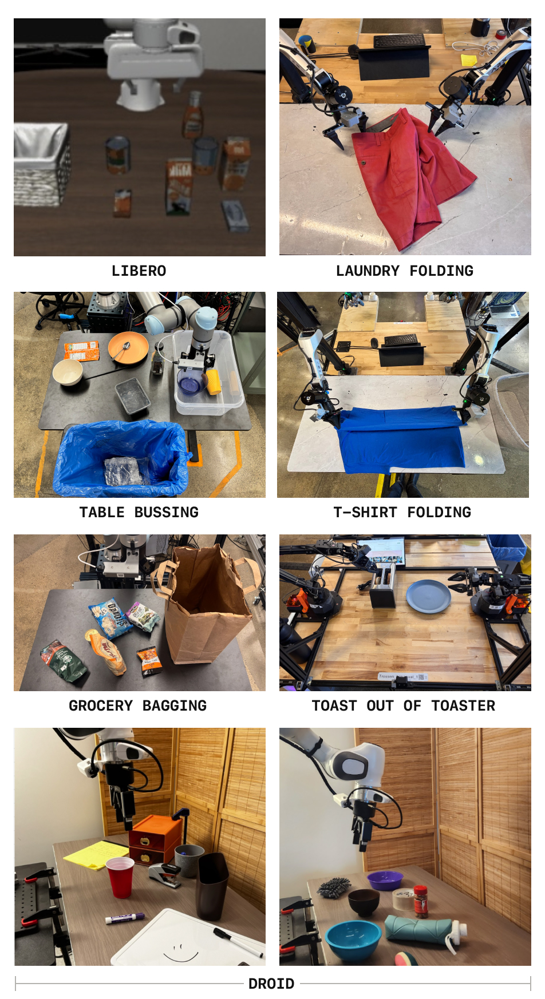
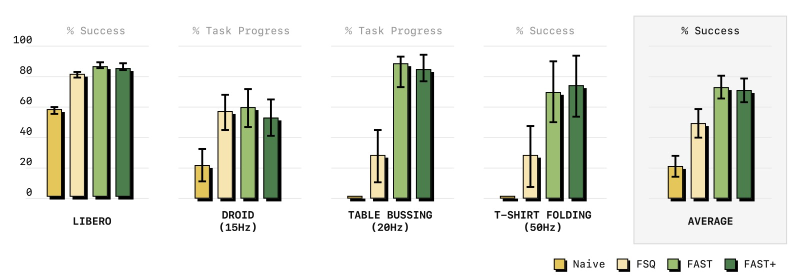
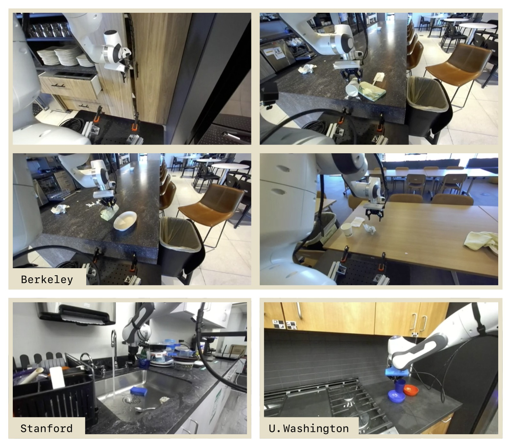
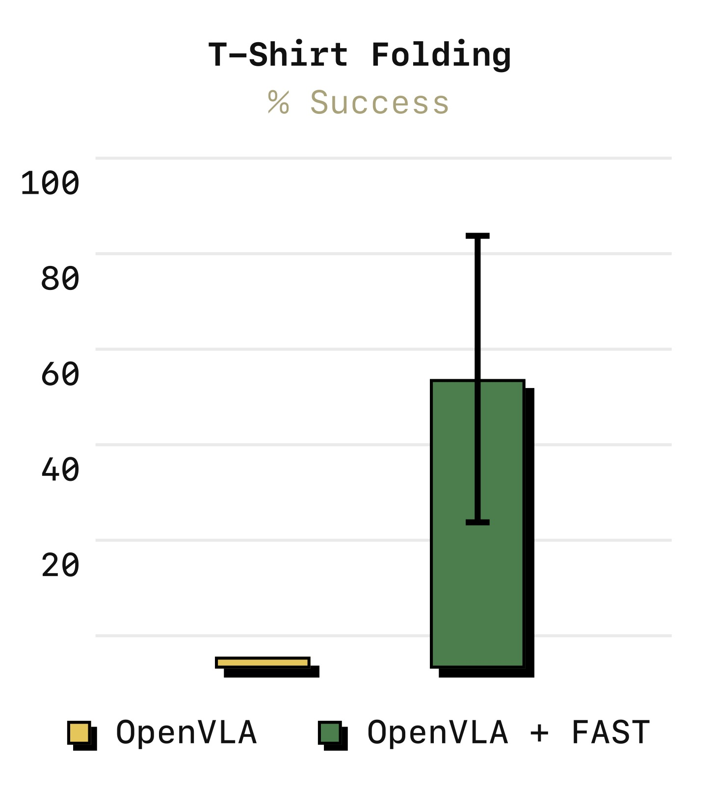
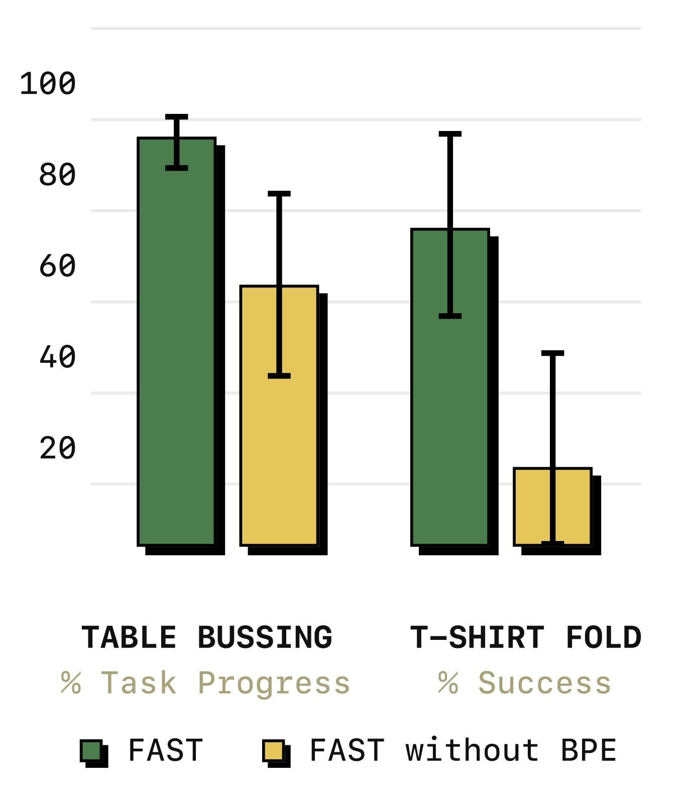
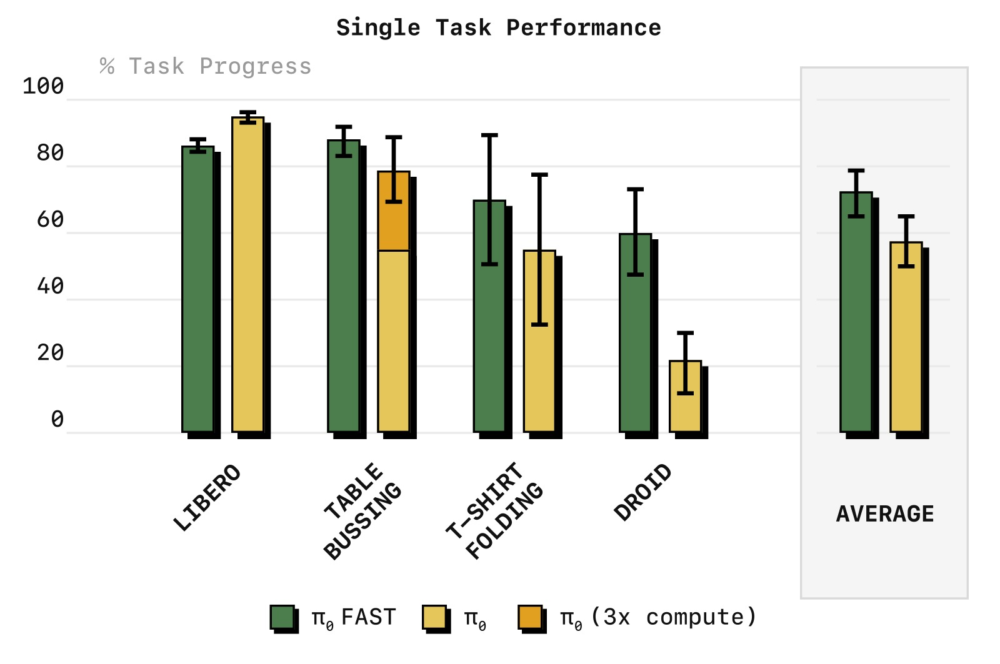
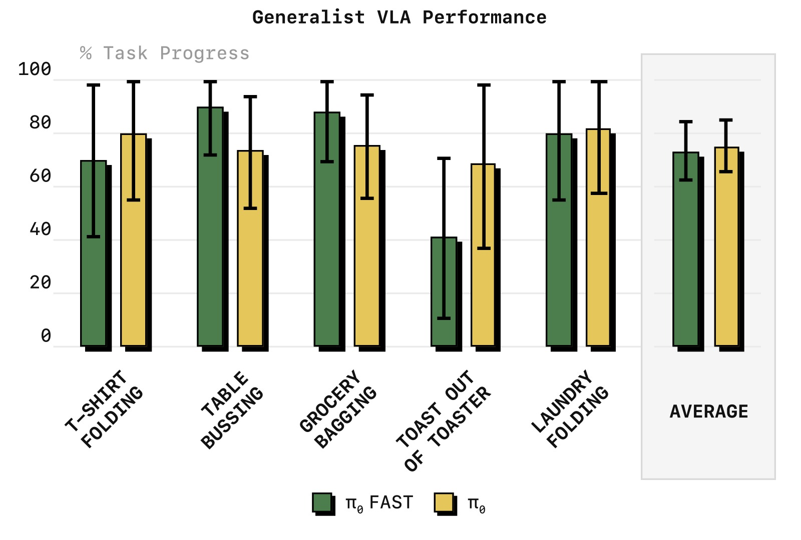

FAST: Efficient Action Tokenization for Vision-Language-Action Models
论文信息 - 作者：Karl Pertsch, Kyle Stachowicz, Brian Ichter, Danny Driess, Suraj Nair, Quan Vuong, Oier Mees, Chelsea Finn, Sergey Levine (*Core contributors) - 通讯作者：research@physicalintelligence.company - 机构：Physical Intelligence, UC Berkeley, Stanford - arXiv ID：2501.09747 - 代码：开源 (HuggingFace:
physical-intelligence/fast，提供预训练 universal tokenizer) - 项目主页：https://pi.website/research/fast
一、核心问题
自回归 VLA 模型（如 OpenVLA、RT-2）在机器人控制中面临一个关键瓶颈：如何将连续的机器人动作信号 token 化？
现有方法使用简单的按维度、按时间步的分桶（binning）方案——将每个动作维度的连续值离散化为 256 个 bin。这种方法在高频控制场景下存在严重问题：
- token 数量爆炸：50Hz 双臂机器人的 1 秒动作 chunk（14维 × 50步）需要 700 个 token，训练和推理都极慢
- 时间步间强相关：高频数据中相邻 token 高度相关，边际信息量趋近于零，导致 next-token prediction 训练信号极弱
- 模型陷入局部最优：模型只需"复制上一个 token"即可获得低 loss，无法学到有意义的动作策略
本质问题：naive tokenization 没有压缩冗余信息。
二、核心思路 / 方法
2.1 核心洞察
FAST 的核心思想非常简洁：先压缩，再 tokenize。
灵感来源于自然语言处理中的 BPE（byte-pair encoding）和图像压缩中的 DCT（discrete cosine transform，JPEG 的核心算法）。既然语言模型用 BPE 压缩文本、JPEG 用 DCT 压缩图像，为什么不用类似方法压缩机器人动作？
2.2 FAST Tokenization 流程
FAST（Frequency-space Action Sequence Tokenization）的 pipeline 包含三个步骤：
原始动作 chunk DCT 系数矩阵 token 序列
a_{1:H} ∈ R^{H×|A|} → C ∈ R^{H×|A|} → [T₁, T₂, ..., Tₖ]
┌──────────────────────────────────────────────────────────────────┐
│ Step 1: DCT 变换（频域变换） │
│ │
│ 对每个动作维度独立应用 DCT，将时域信号转换到频域 │
│ C^i_j = DCT(a^i_{1:H}) │
│ │
│ 低频率分量 → 信号的整体形状（最信息丰富） │
│ 高频率分量 → 信号的锐利跳变（通常可丢弃） │
├──────────────────────────────────────────────────────────────────┤
│ Step 2: 量化（压缩） │
│ │
│ C̄^i_j = round(γ · C^i_j) γ: 缩放系数，控制压缩率 │
│ │
│ 缩放后舍入 → 大多数高频系数变为 0 → 矩阵稀疏化 │
├──────────────────────────────────────────────────────────────────┤
│ Step 3: BPE 编码（无损压缩） │
│ │
│ 展平：按列优先顺序排列 (低频分量优先) │
│ [C̄¹₁, C̄²₁, ..., C̄¹₂, ..., C̄ⁿ_H] │
│ │
│ BPE 训练：学习频繁出现的系数组合 → 合并到固定大小词汇表 (1024) │
│ 最终输出：紧凑的 token 序列 [T₁, ..., Tₖ] │
└──────────────────────────────────────────────────────────────────┘

图1：FAST 动作 tokenization pipeline 的完整流程。输入为归一化后的动作 chunk，首先对每个动作维度独立应用离散余弦变换（DCT），将时域信号转换到频域；然后通过缩放-舍入操作（scale-and-round）量化 DCT 系数，高频低幅分量变为 0，实现有损压缩；最后将稀疏的 DCT 系数矩阵按列优先（低频优先）展平为一维序列，用 BPE 进行无损压缩，输出紧凑的 action token 序列。整个流程仅有两个超参数：缩放系数 γ 和 BPE 词汇表大小，且两者都不敏感。
2.3 为什么 DCT？
DCT 相比学习式压缩方法（如 VQ-VAE、FSQ）的优势：
| 属性 | DCT (FAST) | VQ-VAE / FSQ |
|---|---|---|
| 需要训练 | 否（解析方法） | 是（需训练神经网络） |
| 调参难度 | 极低（仅 2 个不敏感超参数） | 高（需仔细调节 codebook 大小等） |
| 压缩效率 | 高（尤其高频数据） | 中等 |
| 解压缩 | 快速可逆 | 需要网络推理 |
| 可解释性 | 高（频域物理意义清晰） | 低 |
2.4 关键设计决策
列优先展平（低频优先）：将 DCT 系数按列优先（先展平所有维度的最低频分量，再展平次低频...），而非行优先。原因：低频分量刻画信号的整体形状，先预测低频能带来更稳定的策略 rollout。
压缩率对比：FAST 在不同数据集上的压缩效果
| 数据集 | 动作维度 | 控制频率 | Naive token 数 | FAST token 数 | 压缩比 |
|---|---|---|---|---|---|
| BridgeV2 | 7 | 5 Hz | 35 | 20 | 1.75× |
| DROID | 7 | 15 Hz | 105 | 29 | 3.6× |
| Table Bussing | 7 | 20 Hz | 140 | 28 | 5.0× |
| T-Shirt Folding | 14 | 50 Hz | 700 | 53 | 13.2× |
关键观察：FAST 在不同数据集上每个手臂始终产约 30 个 token，与数据频率基本无关——这说明 FAST 找到了接近信号内在复杂度的表示。
2.5 Universal Tokenizer (FAST+)
论文还训练了一个通用动作 tokenizer——在 100 万条真实机器人动作轨迹（覆盖单臂、双臂、移动机器人，关节空间和末端执行器空间，各种控制频率）上训练 BPE 词汇表。使用时只需 3 行代码：
from transformers import AutoProcessor
tokenizer = AutoProcessor.from_pretrained(
"physical-intelligence/fast", trust_remote_code=True
)
tokens = tokenizer(action_chunk)
三、教学案例：Tokenization 为什么重要？

图2：tokenization 对预测性能影响的教学实验。任务：给定四个条件点（圆圈），预测一条三次样条插值曲线（黑色虚线）。使用相同的数据集和模型架构，仅改变信号的采样率（25~800 步）。上图：不同 tokenization 方法的预测 MSE 随采样率变化。Naive binning 方法（蓝色）在低采样率下表现尚可，但随着采样率增加，MSE 急剧上升；而 DCT-based FAST 方法（绿色）在所有采样率下保持稳定的低误差。下图的定性示例展示了关键差异：在高采样率（800 步）下，naive 方法只能简单地"复制第一个点"，而 FAST 方法仍能准确重建曲线。
根本原因分析：
自回归模型的训练目标是最小化 $P(T_i | T_{1:i-1})$ 的负对数似然。当相邻时间步高度相关时，$T_i$ 在已知 $T_{i-1}$ 的条件下几乎确定——边际信息量趋近于零。优化目标因此变得非常平坦，模型在学习过程中难以获得有意义的梯度信号。
压缩 tokenization 解决了这个问题：压缩后的每个 token 携带更多独立信息，边际信息量更大，训练信号更强。
四、实验与结果
4.1 实验设置
评估覆盖 7 个场景（6 个真实机器人 + 1 个仿真）：
| 任务 | 机器人 | 频率 | 难度 |
|---|---|---|---|
| Libero (仿真) | 单臂 | - | 多任务基准 |
| Table Bussing | UR5e 单臂 | 20 Hz | 语义识别 + 灵巧抓取 |
| T-Shirt Folding | ARX 双臂 | 50 Hz | 高频灵巧操作 |
| Grocery Bagging | UR5e 单臂 | 20 Hz | 多物体精细放置 |
| Toast out of Toaster | Trossen 双臂 | 50 Hz | 精确抓取 |
| Laundry Folding | ARX 双臂 | 50 Hz | 最困难：多阶段 + 可变形物体 |
| DROID (zero-shot) | 单臂 | 15 Hz | 泛化到完全未见环境 |

图3：7 个评估环境的概览。(1) Libero——仿真多任务基准，测试空间/物体/目标泛化；(2) Table Bussing——UR5e 单臂清理桌子，12 个物体需要正确分类（垃圾 vs 餐具）；(3) T-Shirt Folding——ARX 双臂叠 T 恤，50Hz 高频控制；(4) Grocery Bagging——UR5e 将 7 种食品装入纸袋；(5) Toast out of Toaster——Trossen 双臂从烤面包机取吐司；(6) Laundry Folding——最困难任务，从洗衣篮取衣物→展平→折叠→堆叠；(7) DROID zero-shot——在完全未见的环境中执行桌面操作任务，仅通过自然语言提示。
4.2 Tokenization 对比主实验

图4：不同 tokenization 方法的策略性能对比。横轴为不同任务，纵轴为成功率（含 95% 置信区间）。比较了 4 种方法：(1) FAST（绿色）——本文提出的 DCT+BPE 方法；(2) FAST+（深绿）——通用 tokenizer；(3) FSQ（橙色）——基于 VQ 的学习式压缩；(4) Naive（蓝色）——传统 binning。核心发现：在高频任务（Table Bussing 20Hz、T-Shirt Folding 50Hz）上 naive tokenization 完全失败（成功率为 0），而 FAST 能达到高成功率；FAST 优于更复杂的 FSQ 方法；FAST+ 通用 tokenizer 性能与任务特定 FAST 相当。
关键发现：
- Naive tokenization 在高频任务上完全失败（Table Bussing 和 T-Shirt Folding 成功率为 0）
- FAST 在所有任务上大幅优于 naive，尤其在高频灵巧任务上
- FAST 比更复杂的 FSQ（学习式 VQ 压缩）更好或持平，但简单得多
- FAST+ 通用 tokenizer 与任务特定训练的性能相当
4.3 DROID Zero-shot 泛化

图5：FAST 训练的 DROID 策略在三个大学校园的完全未见环境中的零样本评估定性结果。这是首次成功训练出能在完全未见环境中进行零样本评估的 DROID 通用策略——所有先前工作（包括原始 DROID 论文和 OpenVLA）都只能做 co-training 或 fine-tuning 评估，无法展示零样本能力。同一模型检查点在不同场景中执行了多种桌面操作任务：拾取和放置物体、开关柜门、打开水龙头等。即使在失败的试验中，行为仍然合理（如接近微波炉/洗碗机门把手但最终未能打开）。
4.4 消融实验
（1）与 VLA 骨干无关性

图6：在 OpenVLA 骨干上对比 naive tokenization 与 FAST+ 通用 tokenizer（T-Shirt Folding 任务）。原有 OpenVLA 使用的 naive tokenization 完全无法学习（成功率接近 0），而仅更换 tokenizer 就大幅提升了性能。这表明 FAST 是独立于模型骨干的通用方法。
在 OpenVLA 骨干上的实验表明：FAST 显著提升 OpenVLA 在高频数据上的性能，证明 tokenization 方法与 VLA 骨干独立。
（2）BPE 消融

图7：去除 BPE 步骤后的性能变化。仅使用 DCT+量化（无 BPE）的策略仍优于 naive tokenization，但明显不如完整 FAST pipeline。原因是：DCT 已经将信号信息集中在少数非零系数中（改善训练信号），但没有 BPE 压缩时，大量重复的零 token 稀释了训练信号，同时大幅增加推理时间（需要自回归生成数百个 token）。
去除 BPE 后性能下降，但仍优于 naive tokenization。DCT 本身已将信息集中到少数 token，改善了训练信号；但大量重复的 0-token 稀释了信号并拖慢推理。
4.5 FAST 自回归 vs Diffusion

图8：单任务训练中 π₀-FAST（自回归）与 π₀ Diffusion（流匹配）的性能对比。在小数据集（Libero、T-Shirt Folding，<50 小时）上两者性能相当；在大数据集（Table Bussing）上，FAST 收敛速度显著更快——达到相同高分的训练步数减少约 3 倍。在 DROID 任务上，FAST 还展现了更好的语言指令跟随能力（Diffusion π₀ 经常忽略语言指令导致得分更低）。
| 对比维度 | π₀-FAST (自回归) | π₀ (Diffusion/流匹配) |
|---|---|---|
| 小数据集性能 | 相当 | 相当 |
| 大数据集收敛速度 | 3× 更快 | 较慢 |
| 语言指令跟随 | 更好 | 有时忽略指令 |
| 推理速度 | ~750ms/chunk | ~100ms/chunk |
| 训练效率 | 5× 更少 GPU 时间 | 需要更多计算 |
4.6 大规模通用策略训练

图9：通用策略（在 10,000 小时跨具身数据上训练）的对比。π₀-FAST 在所有五个任务上与 Diffusion π₀ 的性能持平——包括最具挑战性的 Laundry Folding 任务。但训练所需 GPU 时间减少了 5 倍。这验证了 FAST tokenization 不仅在小规模任务上有效，也能扩展到大模型、大数据场景。
在 π₀ 的 10k 小时跨具身数据混合上训练 π₀-FAST 通用策略，结果：
- 在所有任务上匹敌 Diffusion π₀ 的性能
- 训练收敛速度快 5 倍（GPU 小时数减少 5×）
- 对大型 VLA 训练（通常需要数千 GPU 小时），节省的计算资源非常可观

图10：训练收敛速度的直接对比。横轴为训练步数，纵轴为 Table Bussing 和 T-Shirt Folding 两个代表性任务的平均性能。π₀-FAST（蓝色）明显比 Diffusion π₀（橙色）更早达到高成功率。这意味着在实际的大规模 VLA 训练中，使用 FAST tokenization 可以将训练计算成本降低约 5 倍。
五、关键洞察与技术亮点
5.1 "压缩 → tokenize" 的设计哲学
FAST 的核心洞察是先压缩、再离散化。这与 NLP 中 BPE 先压缩文本再送入模型、计算机视觉中 JPEG 先 DCT 再量化的思路一脉相承。但这一点在机器人动作 tokenization 中被先前工作完全忽视了。
5.2 DCT 的"免费午餐"
DCT 作为解析变换，不需要任何训练。相比 VQ-VAE/FSQ 等学习式方法需要仔细调参、训练 codebook，DCT 几乎零成本。论文的实验结果反而表明这个更简单的方法效果更好——在高频灵巧任务上超越了 FSQ。
5.3 边际信息量视角
论文给出了一个优雅的理论解释：自回归训练的学习信号正比于 $P(T_i|T_{1:i-1})$ 的边际信息量。高频未压缩数据中，这个量趋近于零。压缩 tokenization 的每个 token 携带更大的独立信息量，因此训练信号更强、收敛更快。
5.4 列优先展平（低频优先）
DCT 系数展平的顺序影响了自回归解码的稳定性。预测时先生成低频分量（信号的"骨架"），再逐渐填入高频细节。这与人类先画轮廓再填细节的过程类似。
5.5 通用 tokenizer 作为基础设施
FAST+ 展示了"通用动作 tokenizer"作为一个模型基础设施组件的可能性——就像 NLP 中的 BPE tokenizer 可以跨语言、跨领域使用一样，FAST+ 跨机器人、跨动作空间使用。
六、局限性
-
推理速度：自回归 FAST 的推理速度（~750ms/chunk）明显慢于 diffusion π₀（~100ms/chunk），因为需要自回归生成 30-60 个 action token（vs 10 步扩散）。虽然对静态操作任务影响不大，但可能不适合高动态任务。未来可通过 speculative decoding、量化等 LLM 推理加速技术改善。
-
机器人平台覆盖有限：只测试了静态机械臂操作，未在移动机器人、灵巧手、人形机器人等平台上验证实际策略性能（仅做了离线压缩率测试）。
-
替代压缩方法未充分探索：除 DCT 和 FSQ 外，还有大量压缩方法（小波变换、学习式编解码器等），它们的相对优劣尚不明确。
-
压缩-精度权衡缺乏理论分析：缩放系数 γ 如何影响下游策略性能缺乏正式的理论保证。
七、关键概念速查
| 术语 | 解释 |
|---|---|
| FAST | Frequency-space Action Sequence Tokenization，本文提出的 DCT+BPE 动作 tokenization 方法 |
| FAST+ | 在 100 万条真实机器人轨迹上训练的通用动作 tokenizer，可跨机器人使用 |
| DCT (Discrete Cosine Transform) | 离散余弦变换，将时域信号转换为频域表示的解析变换，JPEG 压缩的核心算法 |
| BPE (Byte-Pair Encoding) | 一种无损压缩方法，通过合并频繁出现的 token 对来减少序列长度，广泛用于 LLM tokenizer |
| Action Chunk | 一次预测未来 H 步动作的序列，用于提高时间一致性、减少累积误差 |
| Naive Tokenization | 按维度、按时间步独立分桶（binning）的动作离散化方案，OpenVLA/RT-2 使用 |
| FSQ (Finite Scalar Quantization) | 一种简化的 VQ 方法，将连续值舍入到有限整数集，不需要训练 codebook |
| VLA (Vision-Language-Action) | 在 VLM 基础上增加动作输出的模型 |
| π₀-FAST | 结合 π₀ VLA 和 FAST tokenization 的自回归通用策略 |
| 边际信息量 | $P(T_i \mid T_{1:i-1})$ 的信息量，衡量给定历史后当前 token 的不确定性 |
| 列优先展平 | 先排列所有维度的最低频分量，再排列次低频，使模型先生成信号整体形状 |
| 量化（Quantization） | 通过 round(γ · C) 将连续 DCT 系数映射到整数，缩放系数 γ 控制压缩率 |
八、FAST 推理流程
┌─────────────────────────────────────────────────────────────────┐
│ π₀-FAST 推理流程（单次动作块生成） │
├─────────────────────────────────────────────────────────────────┤
│ │
│ 输入: │
│ ┌──────┐ ┌──────┐ ┌──────┐ ┌──────────┐ ┌─────────┐ │
│ │图像1 │ │图像2 │ │图像3 │ │语言指令 ℓ │ │关节角 q │ │
│ └──┬───┘ └──┬───┘ └──┬───┘ └────┬─────┘ └────┬────┘ │
│ │ │ │ │ │ │
│ ▼ ▼ ▼ ▼ ▼ │
│ ┌──────────────────────────────────────────────────┐ │
│ │ PaliGemma VLM 3B (自回归解码) │ │
│ │ 输入 token 序列: [I¹, ..., Iⁿ, ℓ, q, T₁, ...] │
│ └──────────────────────────────────────────────────┘ │
│ │ │
│ ▼ │
│ ┌──────────────────────────────────────────────────┐ │
│ │ 自回归生成 action tokens (30-60 tokens) │ │
│ │ T₁ → T₂ → ... → Tₖ │ │
│ │ 每个 token 预测基于所有前缀 token │ │
│ │ 推理时间: ~750ms (NVIDIA 4090) │ │
│ └──────────────────────┬───────────────────────────┘ │
│ │ │
│ ▼ │
│ ┌──────────────────────────────────────────────────┐ │
│ │ FAST 解码 (DCT 逆变换) │ │
│ │ tokens → BPE解码 → DCT系数 → DCT逆变换 → 动作 │ │
│ └──────────────────────┬───────────────────────────┘ │
│ │ │
│ ▼ │
│ 输出: 1 秒动作序列 [a_t, ..., a_{t+H-1}] → 执行部分后重新推理 │
│ │
│ 对比 Diffusion π₀: 推理 ~100ms, 训练需 5× 更多 GPU 时间 │
└─────────────────────────────────────────────────────────────────┘
九、与 π₀ 论文的关系
π₀ (arXiv 2410.24164) π₀-FAST (本文)
┌─────────────────────┐ ┌──────────────────────┐
│ 流匹配 (Diffusion) │ │ 自回归 + FAST token │
│ 动作专家 (300M) │ │ 全 VLM 骨干参与解码 │
│ 10 步扩散推理 │ │ 30-60 步 token 解码 │
│ 训练慢, 推理快 │ │ 训练快 (5×), 推理慢 │
│ 连续动作空间 │ │ 离散 token 空间 │
└─────────────────────┘ └──────────────────────┘
│ │
└────────────┬─────────────────────────┘
│
共享: PaliGemma 3B 骨干
共享: 跨具身训练数据 (7 robots, 68 tasks)
共享: Action Chunk (H=50)
π₀-FAST 不是要取代 Diffusion π₀，而是提供了一种高效训练的替代方案。自回归 + FAST tokenization 收敛快但推理慢，Diffusion 训练贵但推理快。两者的互补关系类似于"开发模式 vs 生产模式"。
笔记生成日期：2026-05-14